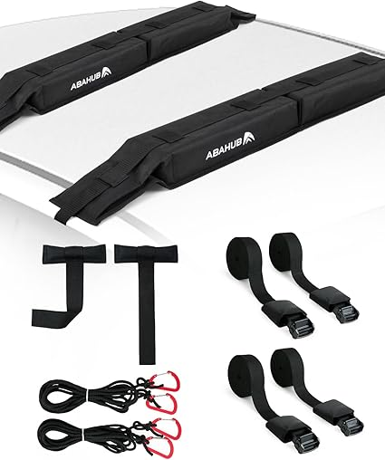
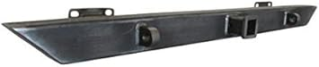
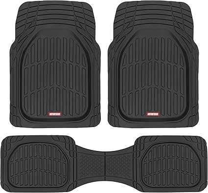

← s2parts.com
S2parts — A Practical 2026 Guide
May 2026
Whether you're upgrading or buying your first, the right s2parts in 2026 comes down to a few factors most buyers overlook.
Lessons from Real Buyers
- Ignoring the fine print — Some s2parts listings look great until you realize key parts are sold separately.
- Going with the cheapest option — Budget s2parts cut corners. Spending 20% more often gets something that lasts 3x longer.
- Skipping negative reviews — A 4.5-star product with durability complaints tells you more than a 5-star product with 8 reviews.
- Panic buying on sale days — Prime Day and Black Friday s2parts deals aren't always real discounts. Check year-round pricing.
Standout Options

→ #1 — Parking Brake Pedal Foot Pad For 1971-1980 International Harvester Scout II — Highly reviewed

→ #4 — ALL-TOP Spare Tire Trash Bag Heavy Duty Truck Tailgate Trash Bag Cargo Stor — Editor's pick
→ #5 — 2 Pack 3Pt Pads Adjustable Retractable Straps Cover Universal Replacement S — Fan favorite

→ #3 — 4719 Rear Liftgate Tailgate Lift Supports Shocks Struts Arms Prop Rod Dampe — Fan favorite

→ #2 — Turn Signal Switch For International Harvester Scout II Terra 1977-1980 — Highly reviewed
→ Amazon — Great value
Real-World Tips
- The 3-star reviews are gold. They're usually the most balanced and honest takes on s2parts.
- Set price alerts on your top picks. s2parts prices can drop 30-40% without warning.
- Set a firm budget before browsing. It's easy to creep up $50-100 comparing s2parts features.
- Between two options? Go with the one that has more reviews. Volume of feedback matters for s2parts.
Critical Factors Most Miss
- Verified reviews — Focus on 4+ star products with 50+ verified reviews. Ignore anything with only a handful of ratings.
- Total cost of ownership — The cheapest s2parts upfront can be the most expensive over time with replacements and accessories.
- Price trends — s2parts prices fluctuate. Track your picks and buy when the price dips.
- Material grade — Higher-grade materials in s2parts last longer and perform better, even when designs look similar.
- Compatibility — Always double-check that s2parts fits your specific setup before ordering.
The Bottom Line
Our comparison tables on s2parts.com break down options by price, features, and ratings. Start there.
Affiliate Disclosure: As an Amazon Associate, we earn from qualifying purchases. This doesn't affect our recommendations.